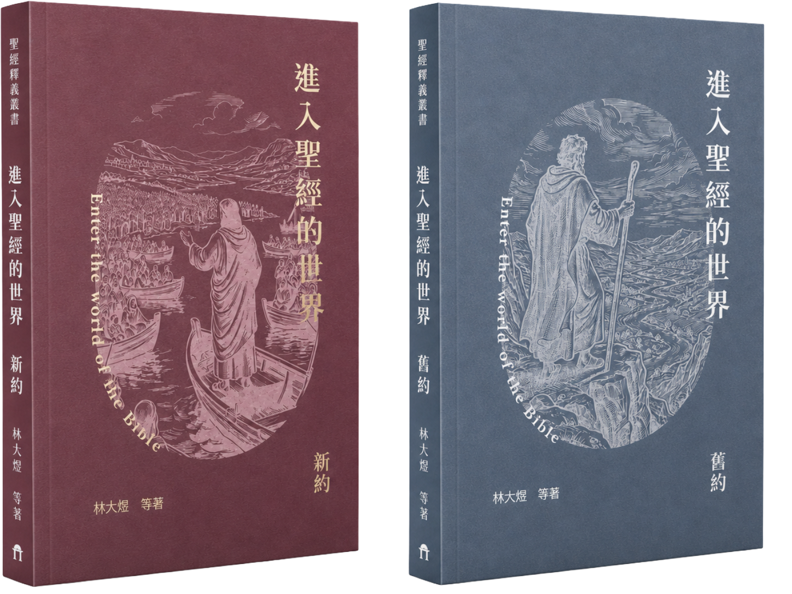

01
依聖經次序啟程
從創世記一路前行至啟示錄，每一卷都是一塊等待進入的領地。你將按著聖經的路線前進，不跳站，也不迷航。
你將從創世記一路走向啟示錄。每一卷經書都是一塊等待進入的領地，副標像地圖與指南針，帶你從入口開始理解聖經世界。

從創世記一路前行至啟示錄，每一卷都是一塊等待進入的領地。你將按著聖經的路線前進，不跳站，也不迷航。
每一站會出現四句副標。請選出最能開啟這卷書的一句，讓副標成為你理解經卷地貌的指南針。
作答後，閱讀一段書中導讀，再前往下一卷。走完整趟 63 卷旅程，看看你是否能從副標開始，重新入門聖經世界。
EXPEDITION MANIFESTO
AI 可以在數秒之內，為一卷聖經攤開一張空照圖；它能指出山脈、河道與城市的位置，卻不能代替人親自踏上泥土，穿過風沙，聽見神話語在心裡發光的時刻。
聖經分為新舊兩約，一脈相承見證基督救恩；然而龐雜的歷史、陌生的律例、漫長的族譜與文化距離，常像迷霧、荒野與迷宮，使人站在入口前，卻遲遲不知如何前行。
《進入聖經的世界》就是為這趟旅程預備的專屬嚮導。它不取代聖經本身，卻在你翻開經文以前，先為你標定地貌、主線與方向，使每一卷書的位置逐漸清晰。
帶著指南針進入經文，你不必在陌生地名與複雜脈絡中失去方向，反能更專注於神話語本身，看見救恩如何貫穿全書，也讓真理成為腳前的燈、路上的光。
現在，帶上這份地圖。從第一卷開始，踏入聖經的世界。
四選一，讓你思考經卷！
四個副標中，哪一個才是進入聖經中的內容。